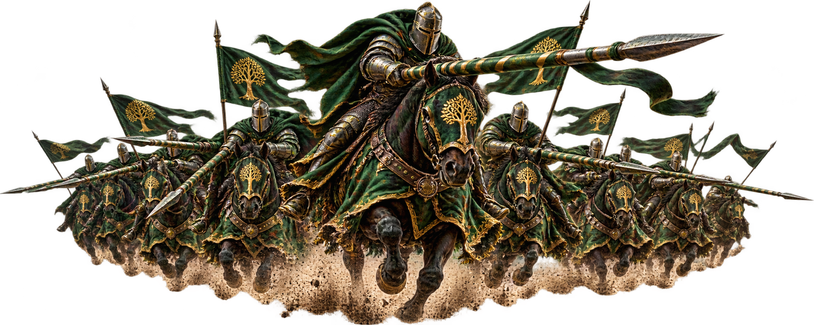

Events
Events are one of the most important ways to earn resources, strengthen your account and contribute to the server. Use these guides to learn what each event is, when it happens and why it is worth participating.
Titantula
Attack Titantula to earn Enchant Stones, Justice Points and other valuable rewards.
Event GuideBattle of Asteria
Complete individual challenges, fight together as an alliance and earn Otherworld Crystals for Immortal Affinity progression.